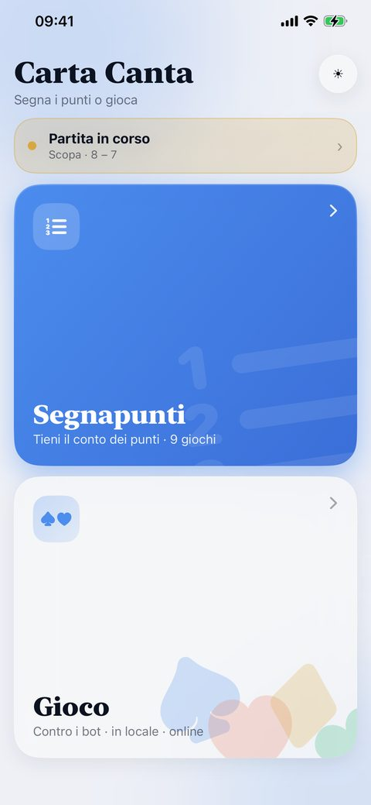
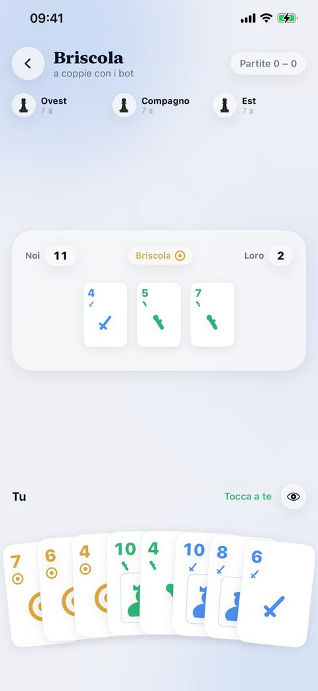
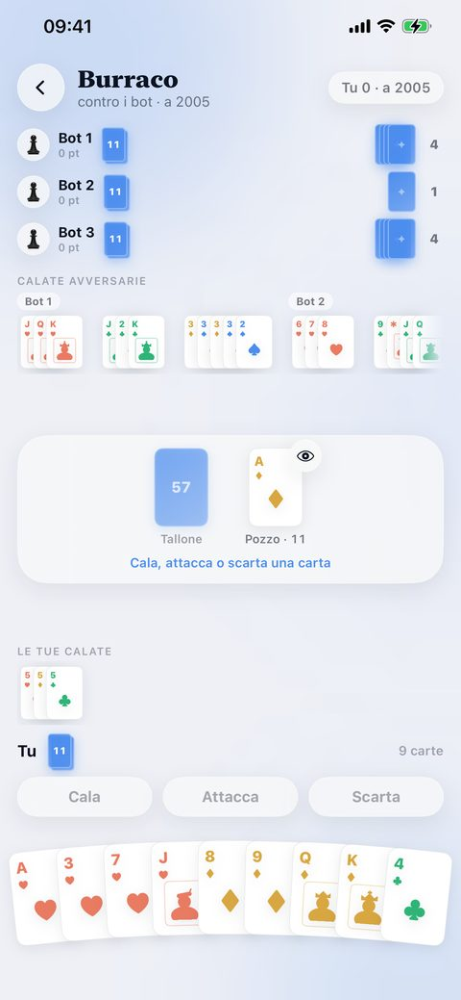
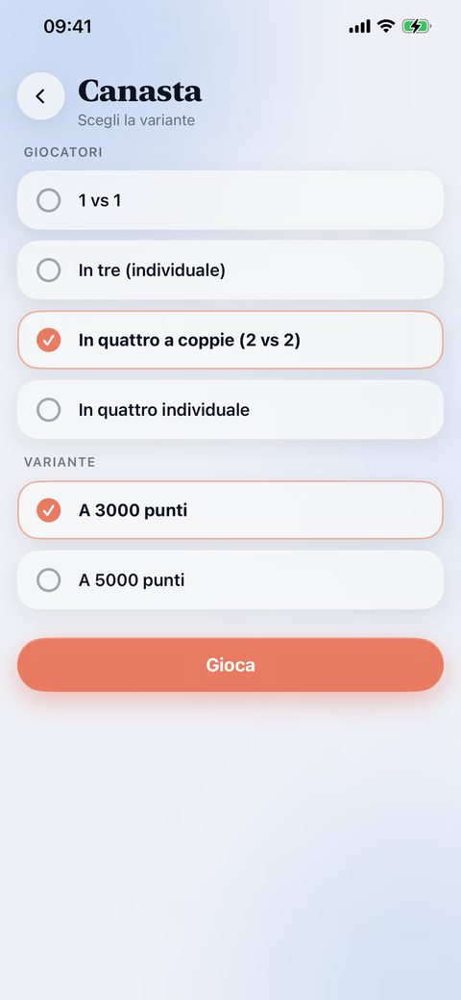
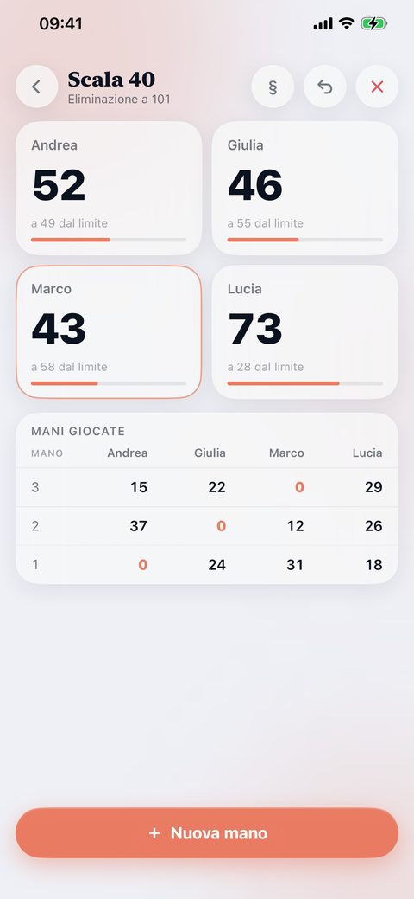
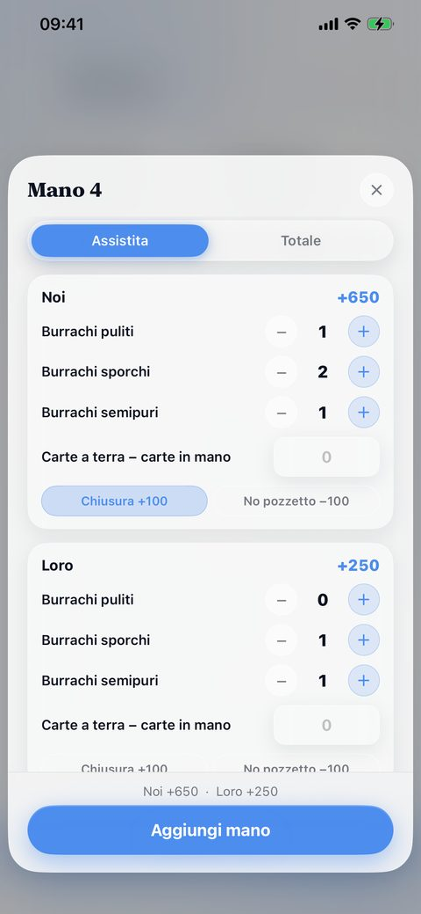
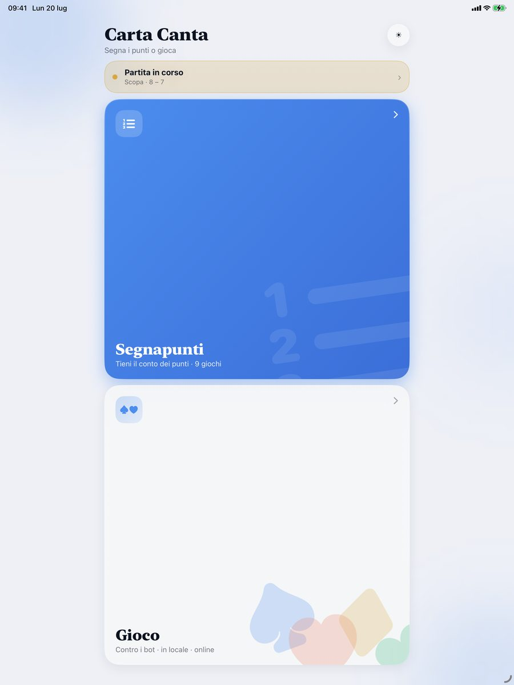
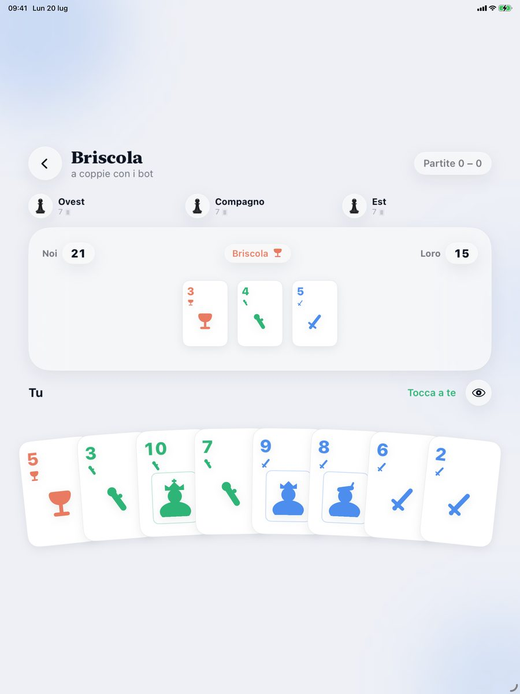

Materiali per la redazione. Ultimo aggiornamento: luglio 2026.
Carta Canta fa due cose per i nove giochi di carte che in Italia si giocano davvero. Tiene il punteggio con le regole vere di ciascuno — settebello e primiera, terzi di punto e accusi, burrachi, limiti di eliminazione — e permette di giocare partite complete: contro bot che ragionano sulle carte già uscite, oppure con persone vere, da 2 a 4, a coppie o individuale.
Sono giochi che si imparano al tavolo di cucina e che nessuno scrive mai: il regolamento completo di tutti e nove è dentro l'app, a portata di tap, così il conteggio è sempre quello giusto anche quando il tavolo litiga.
Briscola, Scopa, Scopone scientifico, Asso piglia tutto, Tressette, Scala 40, Ramino, Burraco, Canasta — ognuno con le sue varianti e i suoi traguardi (a 11/16/21, eliminazione a 101/151/201, a 505/1005/2005, e così via).
La prossima versione porta gli obiettivi Game Center: venti, uno per ogni vittoria ai nove giochi più i momenti di cui ci si vanta al tavolo — due scope nella stessa smazzata, un accuso dichiarato a Tressette, un cappotto a Briscola, un burraco puro. Si sbloccano in tutte le modalità e maturano anche offline.
Interfaccia interamente in SwiftUI, tema chiaro e scuro, icona realizzata con Icon Composer, Game Center per il gioco online e MultipeerConnectivity per quello nella stessa stanza. L'app funziona offline: solo il gioco online richiede una connessione.
iPhone






iPad


Servono le immagini a piena risoluzione, l'icona o altro materiale? Basta scrivere a donbreda4@gmail.com.
English. Last updated: July 2026.
Carta Canta does two things for the nine card games Italians actually play. It keeps score with each game's real rules built in — settebello and primiera, thirds of a point and accusi, burrachi, knockout limits — and it lets you play full matches: against bots that reason from the cards already played, or with real people, 2 to 4, in pairs or individually.
These are games taught at the kitchen table and never written down: the complete rulebook of all nine is inside the app, one tap away, so the score is right even when the table argues.
Briscola, Scopa, Scopone scientifico, Asso piglia tutto, Tressette, Scala 40, Ramino, Burraco, Canasta — each with its own variants and targets (to 11/16/21, knockout at 101/151/201, to 505/1005/2005, and so on).
The next version adds Game Center achievements: twenty of them, one for winning each of the nine games plus the moments players brag about — two scope in one deal, a declared accuso at Tressette, a 120-nil win at Briscola, a clean burraco. They unlock in every mode and are earned offline too.
The interface is entirely SwiftUI, with light and dark themes and an app icon built in Icon Composer; Game Center powers online play and MultipeerConnectivity the same-room tables. The app works offline — only online play needs a connection.
The screenshots above are available at full resolution on request, along with the app icon and any other material: donbreda4@gmail.com.